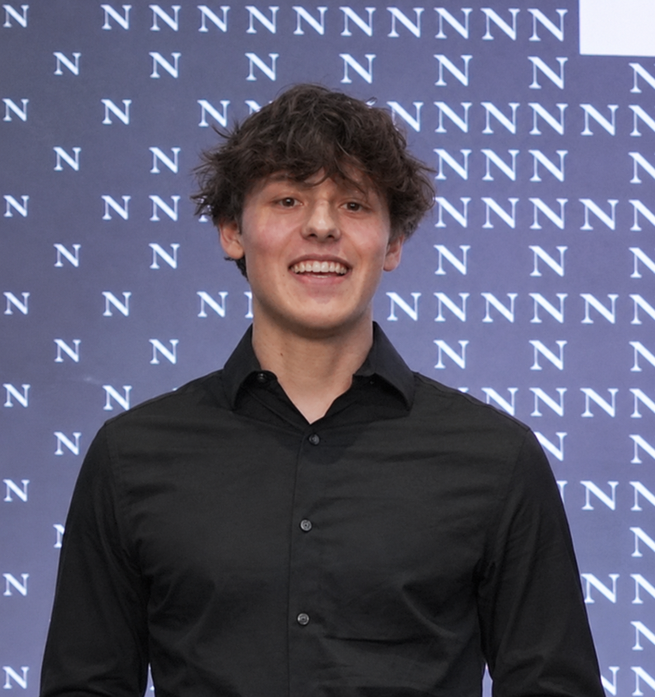
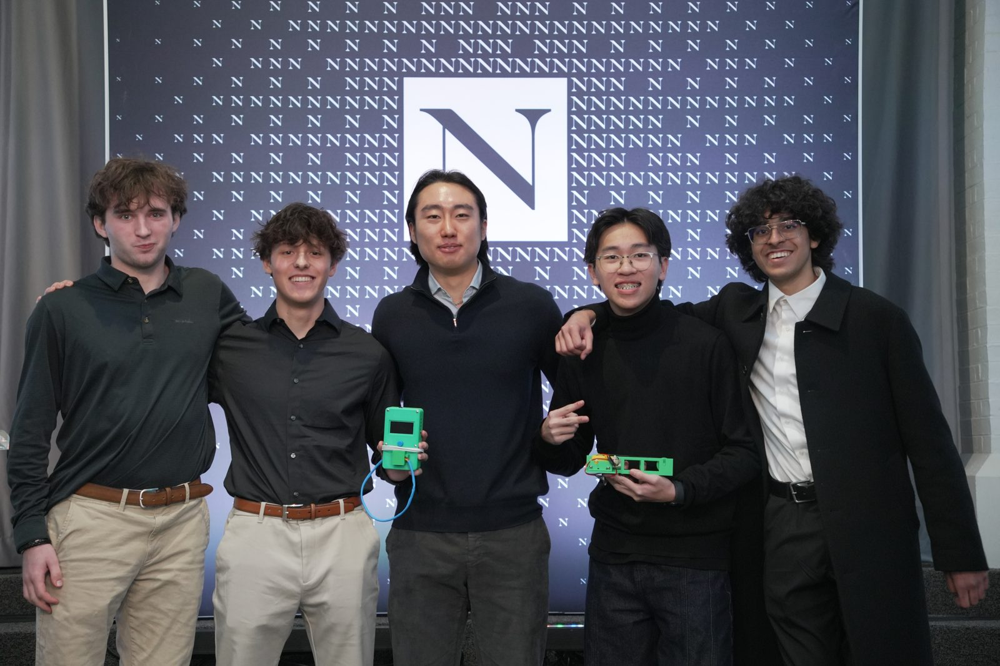

Cameron Yarnall
Cybersecurity student at Northeastern University
I'm a first-year Cybersecurity student at Northeastern, originally from New Jersey. I've been into security since high school, when I interned at the NJCCIC. I like building things people can actually use, from cybersecurity games for kids to hardware at hackathons.
GitHub activity
- Nov 2026
-
effente
Handheld sensor that spots early signs of machine failure. Won 3rd place and $1,000 at the 300 AI Hackathon.

The team with the effente prototype. - 2025 – 2026
-
Pandemonium
source
A story-driven cybersecurity game for younger students. Players are interns at the Panda Proxy Agency who solve mysteries by finding hidden messages, cracking ciphers and writing simple code. Built with Sebastian Mercado and Ramakrishnan Panchacharam.
Work
- Summer 2024
-
Summer Intern, NJCCIC
New Jersey Cybersecurity & Communications Integration Cell, the state's cybersecurity agency.
Awards
- 2026
-
3rd place, Webmaster, NJ TSA State Conference
press release
Union County Community Resource Hub, a website that helps residents find local events and activities. Built with a team of five.
- 2024
-
1st place in New Jersey, CyberStart America
NJCCIC
One of four students statewide to earn the maximum possible score, recognized by the NJCCIC at the 2023/2024 CyberStart Achievement Awards. Also named Rookie of the Year.
Education
- 2026 – 2030
-
Northeastern University
B.S. Cybersecurity
- 2022 – 2026
- New Providence High School